Site News
Warning : This wiki contains spoilers.Read at your own risk!
Social media : If you would like,please join our Discord server,and/or follow us on X(Twitter), Bluesky, or Tumblr!
Main Page
Welcome to Fire Emblem Wiki!
An Online fire Emblem encyclopedia that anyone can
edit.
With 13,816 articles are counting!
This wiki contains spoilers. Read at your own
risk!
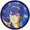
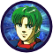
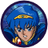
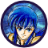
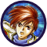
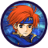
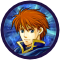
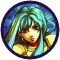
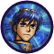
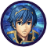
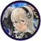
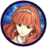
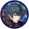
Shadow Dragon & the Blade of Light ~ Gaiden ~ Mystery of the
Emblem ~ Genealogy of the Holy War ~ Thracia 776
The Binding Blade ~ The Blazing Blade ~ The Sacred Stones ~ Path
of Radiance ~ Radiant Dawn
Shadow Dragon ~ New Mystery of the Emblem ~ Awakening ~ Fates ~
Shadows of Valentia ~ Three Houses ~ Engage
Archanea Saga ~ Tokyo Mirage Sessions ♯FE ~ Heroes ~ Warriors ~
Three Hopes
Yutona Heroes War Chronicles ~ Berwick Saga ~ War of the Scions ~
The Sacred Sword of Silvanister
News
24 September 2025Fire Emblem Shadows has been announced and released for iOS and Android.
12 September 2025Fire Emblem: Fortune's Weave has been announced for Nintendo Switch 2.
21 April 2025Fire Emblem: The Sacred Stones has been released on Nintendo Switch Online.
2 April 2025Fire Emblem: Path of Radiance has been announced for release on Nintendo Switch 2's Nintendo GameCube Nintendo Classics app at some point in the future.
5 April 2023The fourth and final wave of DLC for Fire Emblem Engage has been released.
archiveFeatured Articles
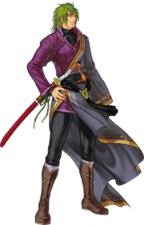
The Branded (Japanese: 印付き Marked Ones) are a race present in
Fire Emblem: Path of Radiance and Fire Emblem: Radiant Dawn.
They are the result of breeding between laguz and beorc, and
bear a mark signifying their heritage.
In both laguz and beorc societies in Tellius, they are a
stigmatized race, looked down upon by both as less than human
owing to their mutual mythologies falsely claiming the sexual
union of a laguz and beorc to be a crime against the goddess;
the beorc call them "Branded" in reference to their mark, while
the laguz call them "parentless" and typically refuse to
acknowledge them. According to laguz legend, when a parentless
one comes into being, a century of destruction follows. In both
laguz and beorc societies in Tellius, they are a stigmatized
race, looked down upon by both as less than human owing to their
mutual mythologies falsely claiming the sexual union of a laguz
and beorc to be a crime against the goddess; the beorc call them
"Branded" in reference to their mark, while the laguz call them
"parentless" and typically refuse to acknowledge them. According
to laguz legend, when a parentless one comes into being, a
century of destruction follows.
Did You Know?
- ...in Thracia 776, a unit's hit rate cannot go above 99% or below 1%?
- ...Lyn's unique animation for using the Sol Katti is unused in the Japanese version of The Blazing Blade?
- ...many of the children characters in Awakening share their birthdays with release dates of past Fire Emblem titles?
- ...in Echoes: Shadows of Valentia the Sound Room can be accessed early by entering Up, Down, Left, Right, Up on the title screen?
- ...Renning is programmed to be able to use Amiti in Radiant Dawn, despite the fact that it can never be placed into his inventory?
Help Fire Emblem Wiki!
Fire Emblem Wiki needs a lot of help and assistance.
1,503 pages are stubs!
- Short articles that need expansion are in the Stubs category.
- Articles with incomplete sections can be found here.
- There are many articles that link to nonexistent articles. A list of these nonexistent articles can be found here.
- Additionally, you can help by creating a new page. To do so, simply enter the title here:
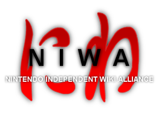
NIWA is a network of independent wikis focusing on various Nintendo franchises.
- ARMS Institute : ARMS
- Bulbapedia : Pokémon
- Chibi-Robo! Wiki : Chibi-Robo!
- Dragalia Lost Wiki : Dragalia Lost
- Drawn to Life Wiki : Drawn to Life
- F-Zero Wiki : F-Zero
- Golden Sun Universe : Golden Sun
- Hard Drop Tetris Wiki : Tetris
- Icaruspedia : Kid Icarus
- Inkipedia : Splatoon
- Kingdom Hearts Wiki : Kingdom Hearts
- Kovopedia : Magical Vacation
- Lylat Wiki : Star Fox
- Metroid Wiki : Metroid
- MiiWiki : Miis
- NintendoWiki : Nintendo
- Nookipedia : Animal Crossing
- Pikipedia : Pikmin
- Pikmin Fanon : Pikmin fanon
- Rhythm Heaven Wiki : Rhythm Heaven
- SmashWiki : Super Smash Bros.
- Starfy Wiki : The Legendary Starfy
- StrategyWiki : Game guides
- Super Mario Wiki :Super Mario
- Ukikipedia :Super Mario 64
- Wars Wiki : Nintendo Wars
- WikiBound: :EarthBound/Mother
- WiKirby : Kirby
- Xeno Series Wiki :Xeno
- Zelda Wiki :The Legend of Zelda